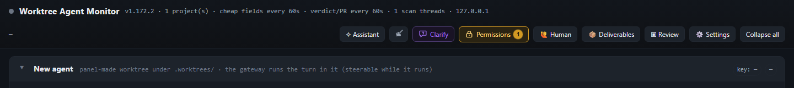
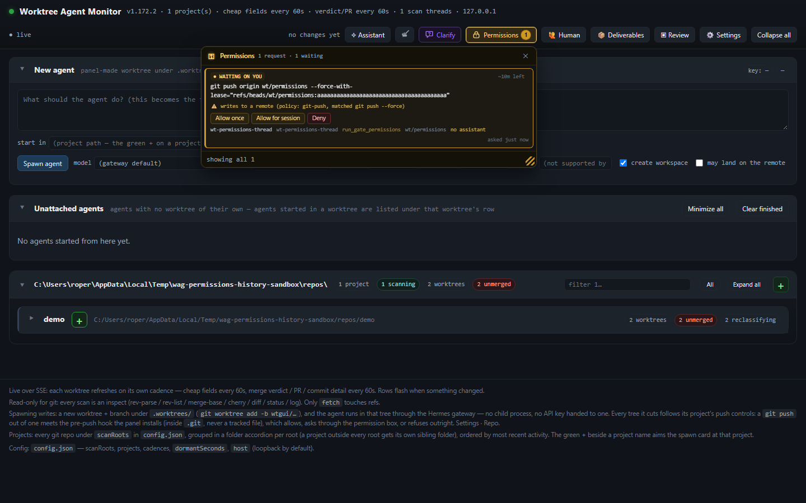
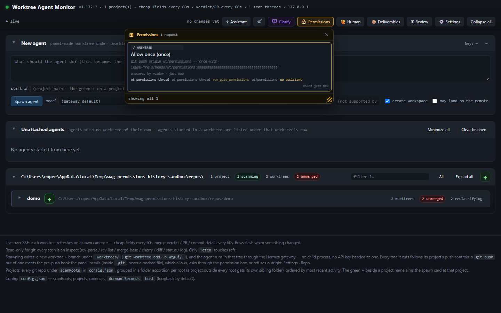

The Permissions header button: a live count, a popup that answers, a durable history
agent-worktree-gui 1.176.0, branch wtgui/build-the-permissions-header-button-here-cff1fc, cut from main at 1.174.0. The feature was carried from 036e1e79 (feat(header): the Permissions button) on the stopped run's branch wtgui/row-677-detail-is-in-the-queue-file-f1cbe5; that branch's other two commits are assistant-2's pr6-non-dal review report, not this row's, and were left where they are. Every number below comes from test/permissions-history.test.js and tools/verify-permissions-history.mjs driving a real panel and real approvals; every line number is on this branch.
- Header control
- public/index.html:58, painted at public/app.js:14200, count started at public/app.js:14971
- Badge count
- /api/state's
approvals(server.js:4729), counted by public/core/permissions-history.js:144 through public/permissions-history.js:377 - Popup read
- GET /api/permissions/history (routes/permissions-history.js:33)
- One answer path
- POST /api/approvals/answer (public/permissions-history.js:327, server.js:6431)
- Durable store
- lib/permissions-history.js (ask:177, answered:221, expired:244, reconcile:262); the file is lib/paths.js:234
- Notifications
- the frames plus the slow tick the Clarify button uses (public/permissions-history.js:391)
- Tests
- 19 unit tests, 0 failed; gate 44 checks, 0 failed
- Version
- 1.176.0, above main's 1.174.0; 1.175.0 is held by another unmerged branch
- Long dashes
- 0 em dashes, 0 en dashes in this page
1. The acceptance, item by item
| The row asks for | Where it is | The gate's own reading |
|---|---|---|
| A Permissions button beside Clarify, its badge counting OPEN permission requests sourced from /api/state | public/index.html:58 public/app.js:14200 public/core/permissions-history.js:144 |
PASS the snapshot the board polls carries the waiting request: got ["req-live-1"]; the page applied the request from /api/state: got ["req-live-1"]; the badge counts that map, not a request of its own: got [1,0,1] |
| A popup listing each open one with its run and thread | public/permissions-history.js routes/permissions-history.js:82 |
PASS the row names the run, the thread and the tree: wt-permissions-thread … run_gate_permissions wt/permissions |
| The exact request text and its choices | public/permissions-history.js (a <pre class="ph-cmd">) |
PASS the popup row shows the command byte for byte: exact. PASS one button per allowed choice, in the host's order: got ["once","session","deny"] |
| The answer control the panel already has (POST /api/approvals/answer) | public/permissions-history.js:327 server.js:6424 |
PASS the decision is on the durable record: got ["answered","once","reader"] |
| A durable history in the panel state folder, shaped like the clarify history | lib/permissions-history.js lib/paths.js:234 |
PASS the record lives in the panel's state folder: …/logs/permissions-history.json; the file carries both rows: got 2 |
| Asked at, by which agent, thread, run, what was asked, what was chosen, when answered or expired, the gateway's policy note | lib/permissions-history.js:81 | PASS it carries the gateway's one-line policy note: writes to a remote (policy: git-push, matched git push --force) |
| Notifications on the same path the Clarify button uses | public/permissions-history.js:391 | the jobs, approval and approval-answered frames, debounced at 1.2 s, plus the 4 s tick and the visibility read. Same three hooks, same debounce, same painter as the Clarify button; no second notification path. |
| Nothing may answer an approval except a person's press | server.js:6424 lib/approvals.js:80 |
PASS a timeout records an expiry, not a decision; the history still says expired, and never borrows the host's deny. The route that settles rows (reconcile) writes an expiry, never a choice. |
2. The badge, and why it reads /api/state
The header button's number is computed from the map the page already holds: /api/state answers approvals from the approval transport's live queue (server.js:4729), public/settings.js:426 applies it, and the approval frames keep it current. openCount (public/core/permissions-history.js:144) counts one per id and drops any entry whose deadline has passed, because the gateway has denied the command at that instant even while the panel's 5 s sweep has not run yet.
A page that has not had its first snapshot still reads GET /api/permissions/history?limit=1 (public/permissions-history.js:379), which is the fallback and is also what the popup's own footer counts. The gate proves the direction of the dependency rather than assuming it: it empties the page's map and the number falls to 0 with no fetch, then puts the entry back and the number returns to 1.
PASS the snapshot the board polls carries the waiting request: got ["req-live-1"] PASS the header button draws a badge of 1 PASS the page applied the request from /api/state: got ["req-live-1"] PASS the badge counts that map, not a request of its own: got [1,0,1]

3. The record, field by field
One row per request id (lib/permissions-history.js:177): a replay of the same id updates the open row in place and cannot erase a settled one. The three states are open, answered and expired; the third is not a courtesy, it is the honest difference between "nobody chose" and "somebody denied", which is exactly the word the host's fail-closed sweep has to send to the waiting caller.
| Field | What it carries |
|---|---|
| seq / key / requestId | the identity the page sends back, and the request's own id: one record per request, never a second row for one id |
| askedAt | when the request reached the panel |
| agent / thread | which agent was blocked, by the thread the transport echoes back, and the name the panel resolves for it |
| runId / jobId | the gateway run and the turn that parked on it (approvalWhere, server.js:1461) |
| tree / treePath / project | where the blocked run was working |
| command | what was asked, byte for byte, never truncated in the store |
| policy / patternKey | the gateway's one-line policy note and the pattern that matched |
| choices | the choices the host allowed, in the host's order: the only answers the popup may offer |
| status / choice / answeredBy / answeredAt | what was chosen, by whom, when |
| closedWhy / closedAt | for an expiry: the reason (timed out, the panel restarted, the gateway no longer holds it) and the instant, stamped at the deadline rather than when a sweep noticed |
4. Nothing answers but a press
Three reads happen without a person: the snapshot's count, the popup's list, and the store's reconcile pass. None of them can write a choice. The reconcile pass (lib/permissions-history.js:262) only ever writes expired with a reason, and the one route that writes answered is the POST that carries a press (server.js:6431). The gate presses the popup's own button and then presses it again:
PASS the badge clears once the request is answered PASS the answered row shows the choice that was pressed: Allow once (once) PASS the decision is on the durable record: got ["answered","once","reader"] PASS a second answer is refused by the panel: HTTP 409 unknown or already-resolved request PASS the record still holds exactly one decision: got ["once","2026-11-25T07:11:31.077Z"] PASS no second decision was written for the request: got 1
The timeout case is the one that matters for honesty, so the gate holds it against the host's own verdict in the same run:
PASS nobody answered it: got 0 PASS the record reads expired, not answered: got "expired" PASS the expiry carries no choice at all: got ["","",null] PASS the expiry says why: got "timed out" PASS the host's fail-closed verdict is the deny the sweep had to send: got ["answered","deny"] PASS the history still says expired, and never borrows the host's deny: got "expired"
And the history is a file, not a memory: the gate stops the panel, boots it again on the same state folder, and reads the same two rows back with the same decision and the same expiry.
PASS the restarted panel still answers both rows: got 2 PASS the decision survived with its choice, who and when: got ["answered","once","reader","2026-11-25T07:11:31.077Z"] PASS the expiry survived as an expiry: got ["expired","timed out",""] PASS the restarted panel keeps the exact request text PASS nothing is waiting after the restart: got 0


5. The Human button, and why the two do not double-count
The Human tab in Settings (public/index.html:713) says what that button counts: "a run stopped on a command it wants to run: the panel's permission box, or a gateway approval", counted on the Human badge, named in its title and stepped into by H, in a rotation that also carries clarify questions, review items and collisions. Two facts keep the new button from being a second count of anything:
- One map, one entry. The Human button's dock group walks
state.approvalsand turns each entry into exactly oneapprovalentry keyeddock:<id>(public/app.js:13864). The Permissions badge counts the same map, one per id (openCount). A request is therefore one entry in each list; neither list can carry it twice. - The switch is the Human button's, not the popup's. Turning the Human Permissions switch off removes that kind from the Human badge, its title and the H rotation, exactly as the Review row already says for the Review control in the header. The Permissions button is its own control: it keeps counting, and the request stays answerable in it. That is the same split the panel already documents between Review and the Human button's review kind.
They also cannot answer for each other: both press the one route, POST /api/approvals/answer, the request leaves the live queue on the first press, and a second press is refused 409 (section 4). A prompt the panel draws on a card from a run's own feed is counted by Human and is not in this popup, because the popup's one answer path is the approval transport's route; the row does not claim it.
6. What was run, and what was not
| Check | Command | Result |
|---|---|---|
| Unit | node --test --test-concurrency=1 test/permissions-history.test.js | 19 tests, 19 pass, 0 fail |
| Live gate | node tools/verify-permissions-history.mjs | 44 checks, 44 pass, 0 fail |
| Neighbours | node --test test/approval-command-summary.test.js test/approvals-window.test.js test/clarify-history.test.js test/absolute-paths.test.js (with the file above) | 89 tests, 89 pass, 0 fail |
| Absolute-path gate | node tools/absolute-paths.mjs --draft | nothing to draft |
| Full suite | not run | the row scopes the verification to the files it touched |
7. What was left alone
- The stopped run's branch
wtgui/row-677-detail-is-in-the-queue-file-f1cbe5: only its036e1e79was carried here. Its two other commits (assistant-2's pr6-non-dal review report) are not this row's and stay on it, along with its worktree and its three modified captures. 1.175.0: held bywtgui/in-c-projectdevelopment-agent-worktree-e39b44, whose tag names a commit that has not landed. This branch takes1.176.0, andversion.mjs applymade that choice by reading the tag.- The changelog: rendered at the merged tip, never on the branch, so this page does not quote it.
Written for queue row "Build the Permissions header button here, carrying the work already done, on a clean branch". The images are the gate's own captures, regenerated by tools/verify-permissions-history.mjs on the run that produced these numbers.